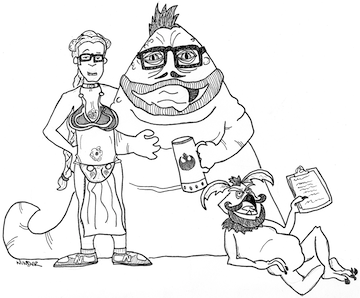

This week's pub quiz was over: to begin with. There is no doubt whatever about that. The register of the scores was signed by the quizmaster, the bartender, the other quizmaster, and the guest quizmaster. Dr. Jordan signed it: and Dr. Jordan's name was good upon 'Change, for anything he chose to put his hand to. This week's pub quiz was as over as a door-nail.
All the sheets were handed in, the scores were handed out, the prizes were handed over, and all the beer was all handily consumed by all. The night had become another stitch in the long, luxuriant fabric of the IRCPQ's history. Another square of two-ply on our novelty roll of toilet paper, if you will. The quizmasters and the quizmastees had all gone home. The night was over. Everything was done.
Everything, except the weekly recap.
The most important thing to know is that Dr. Jordan had yet another virginal quizmaster taking a shot at doing our job last night. This week's bold volunteer was a man from IMSA who shall henceforth be known only as Greggles.* As Robin tells me, a new quizmaster's first round selections offer us a unique window into their soul. If that is true, then Greggles has a soul filled with U-boats, Omega Men, Illinois, Cheap Trick, Ronald Reagan, comets, and lots and lots of backing bands. Not bad.
It's also been said that grizzled, old veterans of quizmastering's rounds offer a glimps into what they ate for dinner last night. A window into their gut. We learned last night that Dr. Jordan's gut is filled with Number Two, MI6, 10 Little Indians, potent potables of all kinds, and one Ben Franklin quote short of a whole round on presidential quotes.
Throughout the night there was some excellent chugging. I particularly enjoyed watching PJ, who finds chugging too easy, casually begin his beer a second or two late and still manage to pull off a tie. Woman and Husband each showed off some chugging skill, and is it just me, or was that the first time they've ever been seen in the same place at the same time?
In the end it was Random Chaos, continuing their consistent streak of organized thought, getting another win for the night. Perhaps the randomness will end next week as we bend time to end the month of August early, all so we can make room for the Nerd Night Mixer. By the way, have you seen this amazing artwork made by our very own Jon Wunder?

See you next week.
* - Only slightly less important than that is breakfast.